Chapter2 From the Cloud
Imagine your lab has some data stored in a Google bucket. Maybe you want to bring this data into AnVIL for analysis, and you want the data to be associated with a specific workspace. One option for doing this is to copy the data from the existing Google bucket to a bucket that is specifically associated with an AnVIL workspace.
Buckets are the name of the containers used to store files and objects on Google Cloud. Everything you store on Google Cloud must be in a bucket. Each bucket has its own unique name and location (uniform resource identifier, or URI). When we move data files into AnVIL workspaces, we use the URI to tell AnVIL where the data should be stored. (We can also use a URI to tell AnVIL where to find the data we want to upload.)
You can read more about how data is saved in the cloud here!
In this example, we’ll upload some genomic data into AnVIL that is currently stored in the cloud (specifically, in a Google bucket).
We’re going to upload some fastq files for a SARS-CoV-2 sample. The bucket we’re accessing contains 5 samples:
- two compressed fastq files
- a fasta file for a SARS-CoV-2 reference genome
- two uncompressed fastq files.
The bucket ID (URI) is fc-80d0e1cd-61e9-472f-b1bd-c6a8223bd1cd.
For this activity, you will retrieve the two uncompressed fastq files and upload them into your workspace.
Genetics
Novice: no genetics skills needed
Programming skills
Intermediate: some command line programming skills needed
What will this cost?
Transferring data from an external Google bucket to a Google bucket associated with AnVIL may have costs associated with data egress (moving the data outside of the existing bucket). If the two buckets are in the same region and have the same setup, these fees are usually negligible.
Running a computing environment on AnVIL will also incur fees. The size of these fees depends on what type of computing environment you use, the configuration you choose (including the number of CPUs and amount of RAM), and the size of the associated persistent disk. You’ll get an estimated cost per hour for the computing environment and the persistent disk before you actually start your environment.
2.1 Step One: Create your workspace
The starting point for bringing your own data to AnVIL is the workspace. Before you can do anything, you will need to create a workspace. Once you have logged into your AnVIL account, click on “Workspaces” in the left-side menu. You can open this menu by clicking the three line icon in the upper left hand corner.

Once you have opened the workspace page, create a new workspace by clicking on the plus sign at the top.
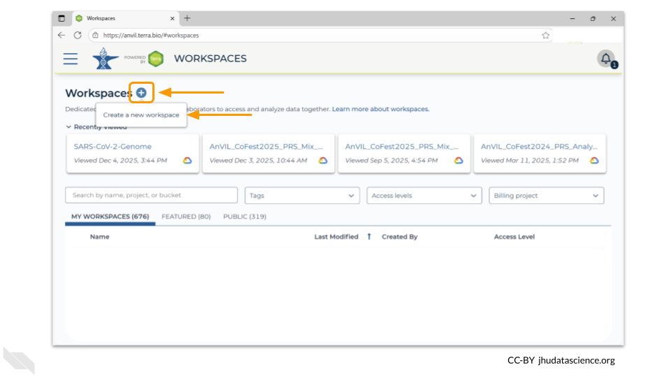
You should now see a pop-up window that lets you customize your new workspace. You will need to give your new workspace a unique name and assign it to a billing project. The “anvil-outreach” billing project is used here as an example, but you will not be able to assign it. You’ll have to use one of your own billing projects. After filling out these two fields, click the “Quick Create Workspace” button to create a workspace without enabling sharing or additional security options.
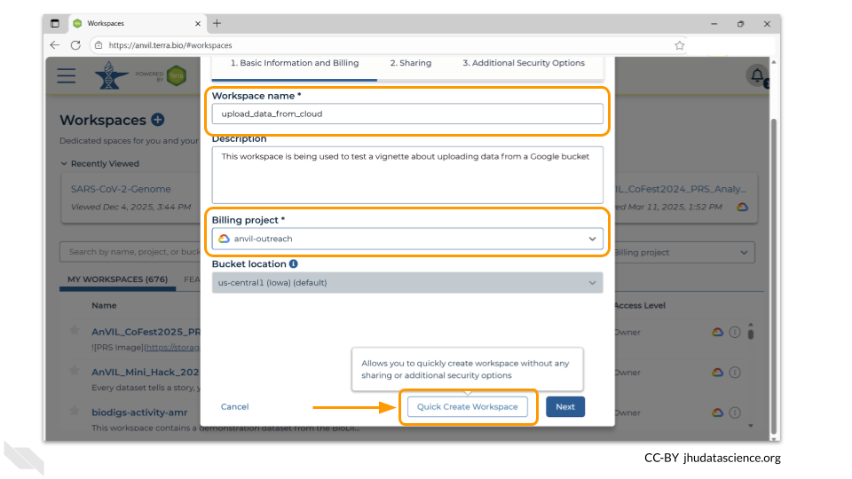
You can read about Authorization Domains for workspace security in this article in the Terra documentation.
Once you have created a workspace, AnVIL will take you to the workspace dashboard.
2.2 Step Two: Provision a Jupyter environment
We will be using a terminal to transfer the files. You will need to provision a Jupyter environment in order to access a terminal window.
To access the menu for provisioning computing environments, double-click on the cloud-and-lightning-bolt icon in the right-hand menu.
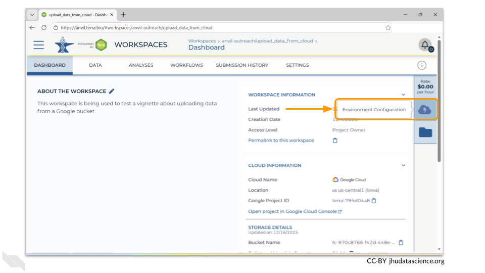
A new menu will pop up. Choose the “Settings” button under the Jupyter logo.
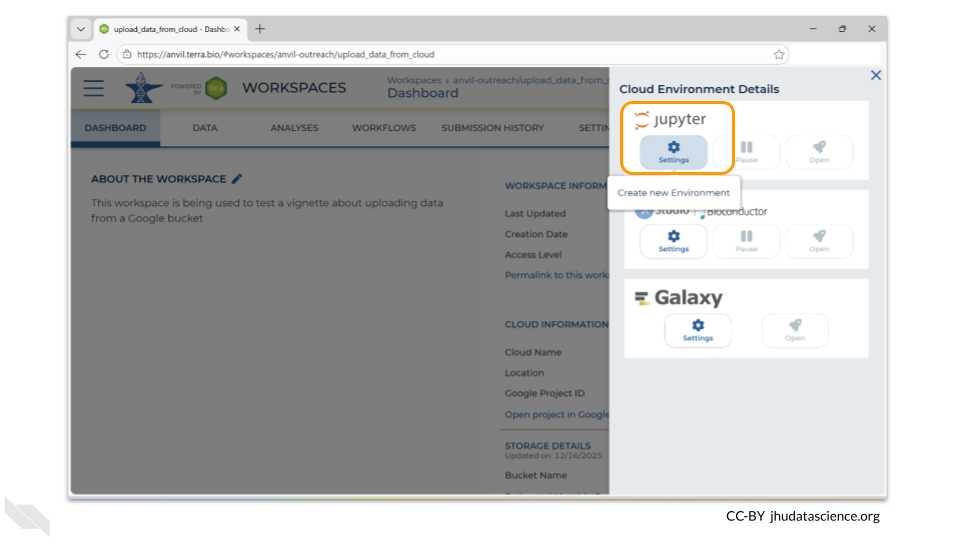
The next menu will allow you to customize your Jupyter environment. For this exercise, the default settings are fine. If you know that your files are large and it will take more than 30 minutes to copy them into your workspace bucket, you may want to deselect the “Enable Autopause” option. When enabled, this option automatically pauses a workspace you have not actively used for a specified amount of time as a cost-saving measure. When you’re ready, click the “Create” button.
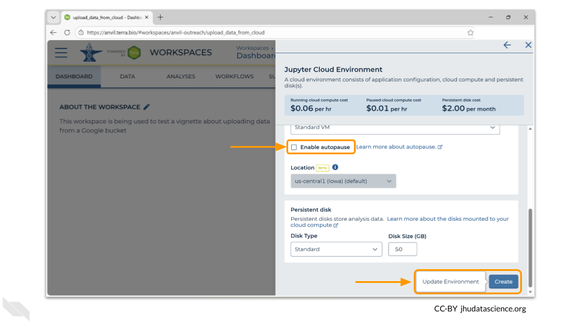
AnVIL will now begin provisioning your environment. This will take a couple of minutes - when testing this vignette, it took between 2 and 3 minutes before the environment was ready. You’ll know it’s ready when the Jupyter icon on the menu has a green dot.
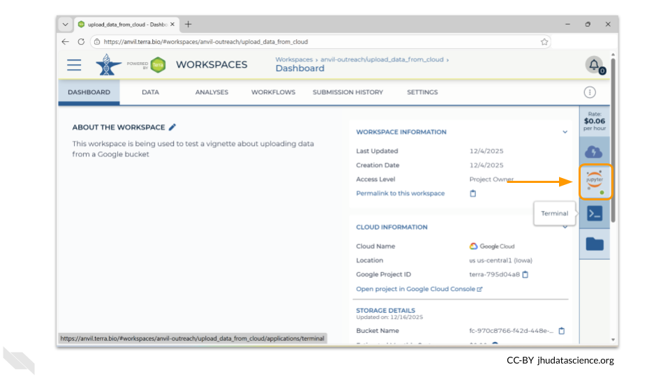
Open a terminal window in your environment. You can access the terminal by clicking the icon below the Jupyter logo in the right-hand menu.
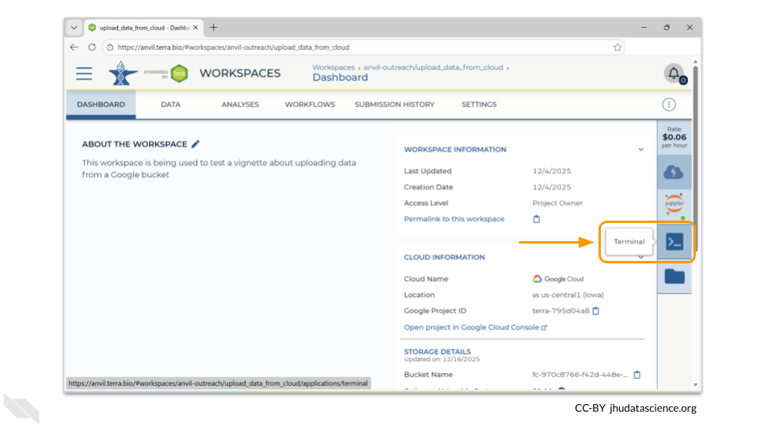
This will open a new tab in your browser window, but you are still in the same workspace!
2.3 Step Three: Run gcloud storage to copy/move files
AnVIL Jupyter environments have the gcloud tools installed by default. This means you can perform command-line gcloud storage tasks to move/copy files between local storage and your workspace bucket (or any external bucket).
The command for this follows this pattern:
gcloud storage cp <where_to_copy_data_from>/<file_name> <where_to_copy_data_to>
You will need the names of both the bucket where the data is currently stored and the bucket the data is being moved to.
The data is currently stored at fc-80d0e1cd-61e9-472f-b1bd-c6a8223bd1cd. Here’s an image of the bucket contents as a reminder.
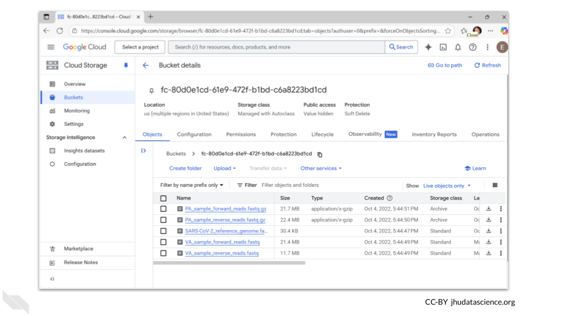
AnVIL workspaces automatically come with 50GB of storage (the persistent disk), as well as a unique workspace bucket.
Terra workspaces have two dedicated storage locations: the workspace bucket and the Cloud Environment virtual machine (VM) Persistent Disk (PD). Like a USB drive, the PD can be detached from the VM before deleting or recreating the Cloud Environment, then attached to a new one. The PD lets you keep your notebook’s code packages, input files, and outputs - without having to move anything to workspace storage (i.e., Google Bucket).
Read more about it here!
The persistent disk is created when you provision your computing environment. When you shut down your computing environment, you can delete the persistent disk, or maintain the persistent disk for a monthly cost.
The persistent disk is mounted to the home directory in your Jupyter environment. If you want to move the data into your persistent disk, you can use the command
gcloud storage cp <where_to_copy_data_from>/<file_name> .
In this case, the command to move the forward read file to the persistent disk is:
gcloud storage cp gs://fc-80d0e1cd-61e9-472f-b1bd-c6a8223bd1cd/VA_sample_forward_reads.fastq gs://fc-970c8766-f42d-448e-9e4f-d86bbe13a065
In order for gcloud to recognize the bucket, you need to add gs:// to the front of its name. Without the gs://, you will get an error message that the file URL does not exist!
However, if you choose to copy the data to the persistent disk, you risk deleting it when you close down your computing environment. Another option is to copy the data to the associated workspace bucket, which does not get deleted when the computing environment is closed.
The dashboard page of your new workspace shows information about the workspace on the right-hand side. At the bottom right, you’ll find the full path to the Google Bucket information corresponding to your workspace. This is the bucket where all information associated with this workspace is stored. In this example case, it is fc-970c8766-f42d-448e-9e4f-d86bbe13a065. However, your workspace will have a different path or name.
You can click the clipboard icon on the right to copy the name of your workspace Bucket.
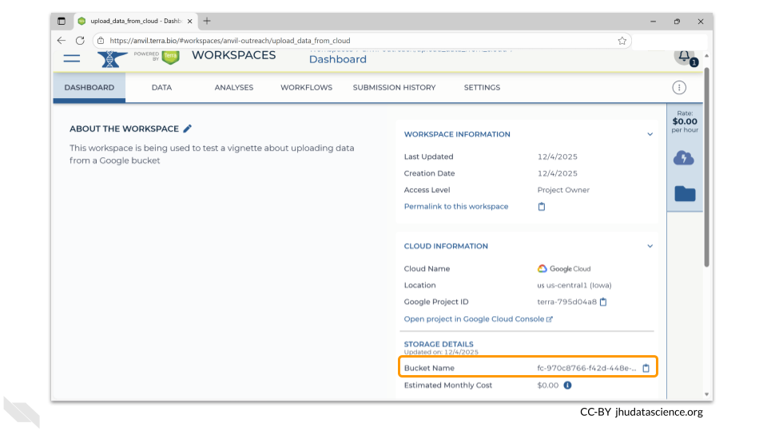
Remember, In order for gcloud to recognize the buckets, you need to add gs:// to the front of their names. So, for this example, the command to move the forward read file is
gcloud storage cp gs://fc-80d0e1cd-61e9-472f-b1bd-c6a8223bd1cd/VA_sample_forward_reads.fastq gs://fc-970c8766-f42d-448e-9e4f-d86bbe13a065
Sometimes you might be accessing data from a “Requester Pays” bucket. You will need to link your own billing project in order to copy this data in order to pay the egress fees. Here are details on how to copy data from this special bucket use case with AnVIL.
2.4 Step Four: Verify that files have been transferred
How do you know if your files were successfully transferred?
You can see any uploaded files by clicking the “Files” directory at the bottom left in the Data Tab.
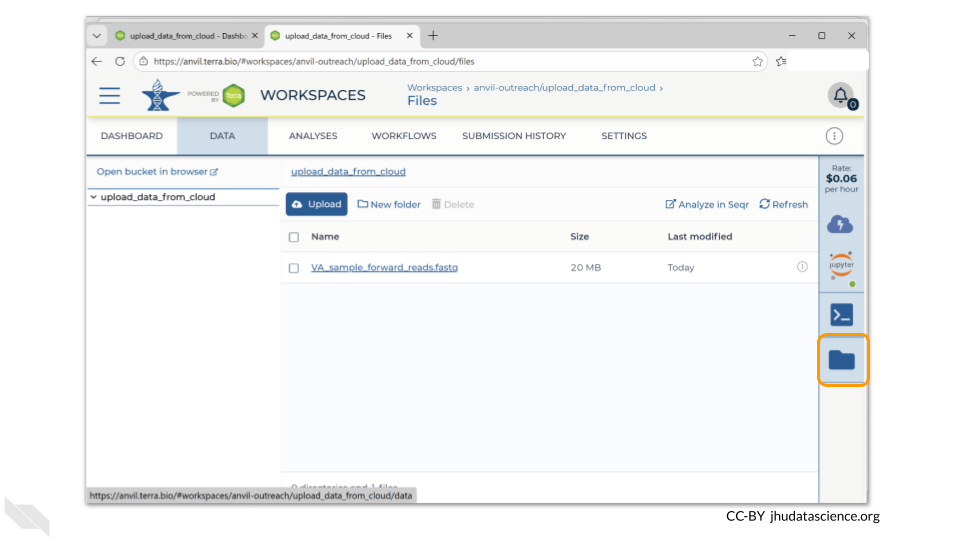
If you click on the name of the file, you can also see the details of the file.
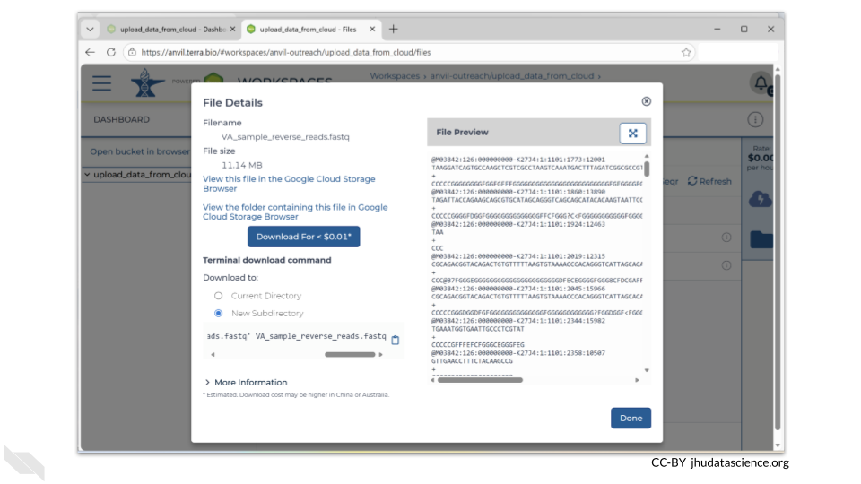
This is a good time to check that the sizes of the files you transferred match the sizes of the original files.
2.5 Step Five: Delete your environment when you are done with your session
Remember that when you are done with your session, you should delete your computing environment. A Jupyter session will continue to accrue costs unless you specifically delete the environment, even if you close the browser window.
When you are done with your session, click on the Jupyter icon in the right-side menu. At the bottom of the pop-up window, you will see a button labeled “Delete Environment”. When you click on this, you have the option to delete everything or to delete just the computing environment (instead of both the environment and the persistent disk). If you delete the environment but keep the persistent disk, the billing account will continue to be charged for a small amount.
2.6 Summary
- Create a workspace
- Provision a Jupyter environment and open Terminal
- Run
gcloud storage cp <where_to_copy_data_from>/<file_name> <where_to_copy_data_to> - Verify that files have been transferred
- Delete the computing environment when you are finished with your session
2.7 Additional Resources
You can read documentation about bringing your own data to AnVIL on the Portal
More details can be found in the Terra documentation
Information about setting up a “Requester Pays” bucket is here.